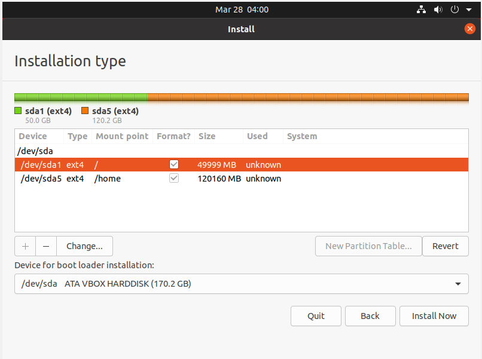
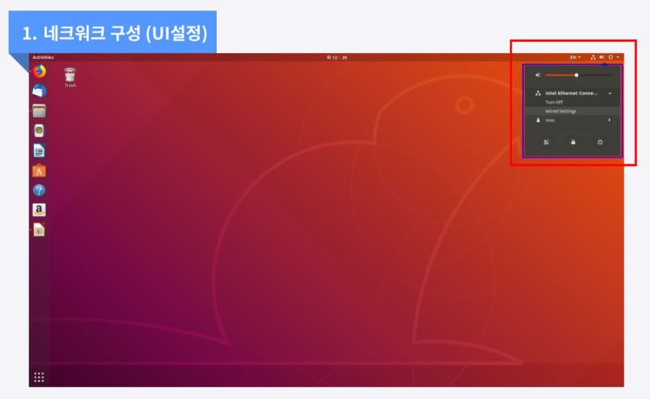

Ingress 구성

OS 설치
- Ubuntu 22.04 LTS 버전을 설치
- OS USB 부팅

ctrl + alt + t터미널 진입 후 gparted 실행
- Gparted 입력 후 빨간색 네모박스의 디스크를 각각 열어서 파티션들을 Delete해서 초기화 한다.
- 우분투는 설치시 disk 초기화가 안되기떄문에 별도 프로그램(gparted)을 실행해서 파티션 초기화 작업을 한다.
- 파란박스에서 장치를 선택해서 각각 파티션을 모두 삭제한다.
- 마지막으로 보라색 박스의 적용을 해준다.
- usb 부팅인경우 usb도 함께 나온다. 삭제하지 않도록 주의한다.
- English를 선택 후, Install Ubuntu를 선택

- continue

- 아래 파란 박스로 체크 후 Continue 인터넷 사용환경이 설정되지 않으면 Download updates 부분은 비활성화 된다. (상관없음)
- somethime else 선택 후 continue
- 아래와 같이 파티션을 설정한다.
| 파티션 | 크기 | 비고 |
|---|---|---|
| EFI 파티션 (EFI partition) | 500MB ~ 1GB | EFI를 사용할 경우 필요 |
| 스왑 파티션 | X | 쿠버네티스 노드에서 프로세스의 성능에 부정적인 영향을 미칠 수 있고, 시스템의 예기치 않은 동작이 발생할 수 있음 |
| 루트 파티션 (Root partition) | 100GB 이상 | 운영 체제 및 시스템 로그, Windows의 C 드라이브 |
| 홈 파티션 (Home partition) | 나머지 디스크 공간 | 쿠버네티스 롱혼의 default 경로가 /var/lib/longhorn 인데, 이것을 home으로 변경할 필요가 있다. 따라서 home partition은 필수로 만들어준다. |

- 계정정보를 작성 후 continue
네트워크 설정 가이드
- 우측 상단 아이콘 클릭 후 Ethernet > Wired Setting을 클릭합니다.

- 연결된 유선 랜의 우측 설정 아이콘을 클릭합니다.

- IP 설정을 위해 IPv4 탭에서 자동구성이 아닌 수동설정을 위해 Manual을 체크합니다.
- 주소에 할당 받은 내부 ip 주소 / 서브넷마스크 / 게이트웨이 주소 그리고 DNS 주소를 작성 후 적용합니다.
hostname -I명령어를 통해 주소가 정상적으로 설정되었는지를 확인합니다.

방화벽 설정
추후 NIC 2개 이상 서버 일 때 확인 필요
-
NIC별로 방화벽을 구성한다.
-
방화벽 ufw 설치
sudo apt-get update
sudo apt-get install ufw
- 모든 port 차단
sudo ufw default deny
- Eth0 내부망이라고 했을때 22, 17000 open
sudo ufw allow in on eth0 to any port 22 proto tcp
sudo ufw allow in on eth0 to any port 17000 proto tcp
- Eth1 외부망이라고 했을때 80 port open
sudo ufw allow in on eth1 to any port 80 proto tcp
- outbound 허용
sudo ufw allow out to any
- 방화벽 활성화
sudo ufw --force enable
- 확인방법
sudo ufw status verbose
사용자 인스턴스 개수 변경
개요
특정 인스턴스가 너무 많으면 Too Many open files 라는 문구와 함께 컨테이너가 죽는 현상이 있다. 기본값은 128개이기 때문에 값을 더 크게 작성한다.
설정 방법
설정값을 적용하기 위해서는 아래의 순서대로 실행한다.
- sysctl.conf 파일을 오픈한다.
vi /etc/sysctl.conf
- 제일 마지막 부분에 아래 내용을 작성한다.
fs.inotify.max_user_instances=1024
- 아래 명령으로 현재 시스템에 적용한다.
sudo sysctl -p
현재값 확인 방법
sysctl -a | grep fs.inotify.max_user_